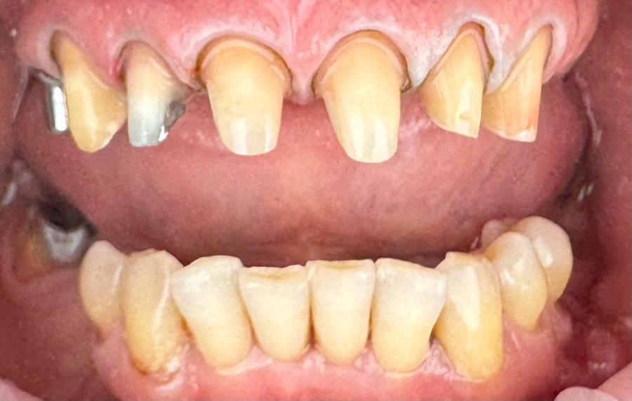
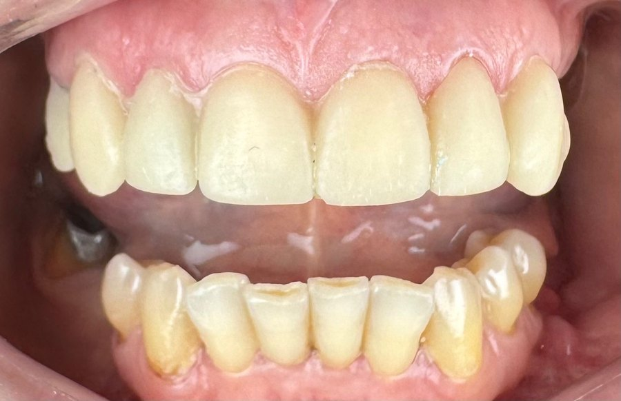

Протезирование передних зубов
Керамические коронки вернули форму, цвет и эстетику улыбки.
Скриншоты реальных отзывов наших пациентов. Нажмите на отзыв, чтобы прочитать его целиком.
Очень боялась ставить имплант, но всё прошло абсолютно безболезненно. Доктор подробно всё объяснил, а на следующий день позвонили и спросили о самочувствии. Имплант прижился отлично, спасибо за заботу!
Делал коронки на передние зубы у Геннадия Николаевича. Результат превзошёл ожидания — улыбка выглядит абсолютно естественно, цвет подобрали идеально. Теперь не стесняюсь улыбаться на фото.
Привела дочку, она панически боится стоматологов. Здесь нашли к ней подход, вылечили зубик без слёз и истерик, ещё и похвалили за смелость. Теперь ходим только сюда, ребёнок идёт с удовольствием.
Лечил запущенный зуб, который в двух других клиниках предлагали просто удалить. Здесь его сохранили — работали под микроскопом, всё аккуратно. Современное оборудование чувствуется во всём.
Регулярно делаю профессиональную чистку. Всё аккуратно и без боли, эмаль заметно светлеет. Персонал доброжелательный, всегда заранее напоминают о визите. Атмосфера спокойная и уютная.
Делала отбеливание — прошло комфортно, зубы стали светлее на несколько тонов без чувствительности. Очень довольна и результатом, и отношением. Рекомендую клинику всем знакомым.
Запишитесь на консультацию — обсудим вашу ситуацию и подберём решение.